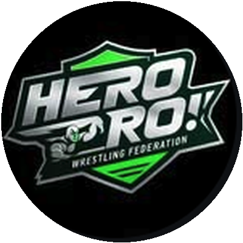
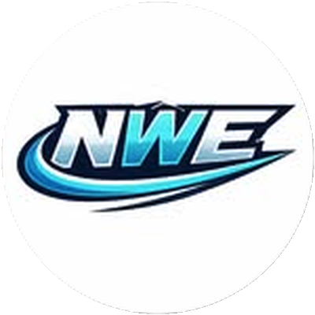
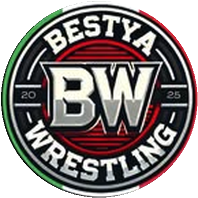

Nuovo video Come la WWE ha fallito con… · 11:09
Come la WWE ha fallito con Bray Wyatt
Il nuovo video lungo di Tony Wrestling: guardalo qui, senza uscire dal sito.
Nuovi arrivi Vedi tutto
 Andre the Giant, curiosità: perché per lui viaggiare in aereo era un'impresaLo sapevi che21 ottobre 20264 min
Andre the Giant, curiosità: perché per lui viaggiare in aereo era un'impresaLo sapevi che21 ottobre 20264 min Big Show, cosa è successo alle sue gambe: gli interventi di Paul WightLo sapevi che21 ottobre 20263 min
Big Show, cosa è successo alle sue gambe: gli interventi di Paul WightLo sapevi che21 ottobre 20263 min Brock Lesnar nel 2002: il campione più giovane e la verità sulla sua cinturaLo sapevi che21 ottobre 20263 min
Brock Lesnar nel 2002: il campione più giovane e la verità sulla sua cinturaLo sapevi che21 ottobre 20263 min Cody Rhodes dopo la sconfitta con John Cena a WrestleMania 41: com'è andata e cosa è successo dopoFlash News21 ottobre 20263 min
Cody Rhodes dopo la sconfitta con John Cena a WrestleMania 41: com'è andata e cosa è successo dopoFlash News21 ottobre 20263 min Crown Jewel 2026 resta a Riyadh, per ora: aeroporto chiuso e allerte di viaggioFlash News21 ottobre 20263 min
Crown Jewel 2026 resta a Riyadh, per ora: aeroporto chiuso e allerte di viaggioFlash News21 ottobre 20263 min Undertaker contro Mankind, Hell in a Cell 1998: la storia vera del volo dalla gabbiaLo sapevi che21 ottobre 20264 min
Undertaker contro Mankind, Hell in a Cell 1998: la storia vera del volo dalla gabbiaLo sapevi che21 ottobre 20264 min Ilja Dragunov, debutto sul ring AEW contro Mike Bailey a DynamiteFlash News21 ottobre 20263 min
Ilja Dragunov, debutto sul ring AEW contro Mike Bailey a DynamiteFlash News21 ottobre 20263 min Kane prima di Kane: il dentista Isaac Yankem, il finto Diesel e la nascita del Big Red MachineLo sapevi che21 ottobre 20263 min
Kane prima di Kane: il dentista Isaac Yankem, il finto Diesel e la nascita del Big Red MachineLo sapevi che21 ottobre 20263 min Ludwig Kaiser, il giudice respinge la richiesta di archiviazione: il caso va avantiFlash News21 ottobre 20262 min
Ludwig Kaiser, il giudice respinge la richiesta di archiviazione: il caso va avantiFlash News21 ottobre 20262 min NWE Wrestling Legends Tour 2026: date, card e biglietti in ItaliaFlash News21 ottobre 20263 min
NWE Wrestling Legends Tour 2026: date, card e biglietti in ItaliaFlash News21 ottobre 20263 min Rey Mysterio contro Eddie Guerrero: la rivalità, il titolo del 2004 e la verità sull'erroreLo sapevi che21 ottobre 20263 min
Rey Mysterio contro Eddie Guerrero: la rivalità, il titolo del 2004 e la verità sull'erroreLo sapevi che21 ottobre 20263 min Risultati WWE NXT 20 ottobre 2026: Cruz Montana arrestato, il main event saltaReaction21 ottobre 20263 min
Risultati WWE NXT 20 ottobre 2026: Cruz Montana arrestato, il main event saltaReaction21 ottobre 20263 min
Più letti
 Tony Wrestling è tornato (e stavolta per restare)Speciale14 ottobre 20262 min
Tony Wrestling è tornato (e stavolta per restare)Speciale14 ottobre 20262 min Seth Rollins è sparito: cosa sta succedendo davveroFlash News14 ottobre 20262 min
Seth Rollins è sparito: cosa sta succedendo davveroFlash News14 ottobre 20262 min Naomi sta per tornare, e credo di sapere quandoFlash News14 ottobre 20262 min
Naomi sta per tornare, e credo di sapere quandoFlash News14 ottobre 20262 min WarGames, Bloodline contro 946: il mio pronosticoPronostici14 ottobre 20262 min
WarGames, Bloodline contro 946: il mio pronosticoPronostici14 ottobre 20262 min Chi può battere Roman Reigns? La risposta è Oba FemiPronostici14 ottobre 20262 min
Chi può battere Roman Reigns? La risposta è Oba FemiPronostici14 ottobre 20262 min- Andre the Giant, curiosità: perché per lui viaggiare in aereo era un'impresaLo sapevi che21 ottobre 20264 min
- Big Show, cosa è successo alle sue gambe: gli interventi di Paul WightLo sapevi che21 ottobre 20263 min
- Brock Lesnar nel 2002: il campione più giovane e la verità sulla sua cinturaLo sapevi che21 ottobre 20263 min
- Cody Rhodes dopo la sconfitta con John Cena a WrestleMania 41: com'è andata e cosa è successo dopoFlash News21 ottobre 20263 min
- Crown Jewel 2026 resta a Riyadh, per ora: aeroporto chiuso e allerte di viaggioFlash News21 ottobre 20263 min
Ultimi video su YouTube Vedi tutto
 Articolo + video9:20La vera storia di PAC (Neville): l'uomo che la gravità aveva dimenticato
Articolo + video9:20La vera storia di PAC (Neville): l'uomo che la gravità aveva dimenticato Articolo + video12:18Tony Wrestling è tornato (e stavolta per restare)
Articolo + video12:18Tony Wrestling è tornato (e stavolta per restare) Articolo + video4:40Le 5 superstar più spaventose della WWE: da Doink a The Undertaker
Articolo + video4:40Le 5 superstar più spaventose della WWE: da Doink a The Undertaker Articolo + video9:01Come la WWE ha fallito con Ryback: da Feed Me More all'addio del 2016
Articolo + video9:01Come la WWE ha fallito con Ryback: da Feed Me More all'addio del 2016 Articolo + video12:13Hero Pro Wrestling: chi sono e com'è andata L'Alba degli Eroi ad Angri
Articolo + video12:13Hero Pro Wrestling: chi sono e com'è andata L'Alba degli Eroi ad Angri Articolo + video5:07La vera storia di Andre the Giant: l'ottava meraviglia del mondo
Articolo + video5:07La vera storia di Andre the Giant: l'ottava meraviglia del mondo Articolo + video11:09NWE wrestling: cos'è la Nu-Wrestling Evolution e com'è andata Purgatory con Nic Nemeth
Articolo + video11:09NWE wrestling: cos'è la Nu-Wrestling Evolution e com'è andata Purgatory con Nic Nemeth Articolo + video4:47Le teorie folli su WrestleMania 41: quali ci hanno preso e quali no
Articolo + video4:47Le teorie folli su WrestleMania 41: quali ci hanno preso e quali no Articolo + video6:44La vera storia di Roman Reigns: dal niente a Tribal Chief (e di nuovo campione)
Articolo + video6:44La vera storia di Roman Reigns: dal niente a Tribal Chief (e di nuovo campione) Articolo + video1:10:25Kimura: chi è il rapper del wrestling e cosa mi ha raccontato a The Showcase
Articolo + video1:10:25Kimura: chi è il rapper del wrestling e cosa mi ha raccontato a The Showcase
The Showcase: le mie interviste Vedi tutto
- Articolo + video1:10:25Kimura: chi è il rapper del wrestling e cosa mi ha raccontato a The Showcase
 Articolo + video1:18:59Mont-Gaming: il creator di WWE 2K e Psycho Pippo a The Showcase
Articolo + video1:18:59Mont-Gaming: il creator di WWE 2K e Psycho Pippo a The Showcase Articolo + video1:09:38Alessio Marsadri (Alex Fiery): chi è il creator di wrestling di TikTok, la mia intervista
Articolo + video1:09:38Alessio Marsadri (Alex Fiery): chi è il creator di wrestling di TikTok, la mia intervista Articolo + video26:30Filippo Wonderblade: chi è il giovane wrestler allievo di Red Scorpion (intervista The Showcase)
Articolo + video26:30Filippo Wonderblade: chi è il giovane wrestler allievo di Red Scorpion (intervista The Showcase) Articolo + video1:14:12Alessandro Bosio, da Avanti un altro al wrestling: la mia intervista
Articolo + video1:14:12Alessandro Bosio, da Avanti un altro al wrestling: la mia intervista Articolo + video1:15:24CertifiedY: chi è e cosa mi ha raccontato a The Showcase
Articolo + video1:15:24CertifiedY: chi è e cosa mi ha raccontato a The Showcase Articolo + video1:09:36MaxIsAwesome92: il nonno degli youtuber di wrestling italiani a The Showcase
Articolo + video1:09:36MaxIsAwesome92: il nonno degli youtuber di wrestling italiani a The Showcase Articolo + video9:05Santino Marella: chi è e perché l'Italia lo ama, la mia intervista in Italia
Articolo + video9:05Santino Marella: chi è e perché l'Italia lo ama, la mia intervista in Italia Articolo + video1:07:23Jhonny Puttini: chi è l'arbitro di wrestling veronese che ha arbitrato in quattro continenti
Articolo + video1:07:23Jhonny Puttini: chi è l'arbitro di wrestling veronese che ha arbitrato in quattro continenti Articolo + video1:42:32D3, il wrestler romano che ha lottato in WWE e AEW: la mia intervista
Articolo + video1:42:32D3, il wrestler romano che ha lottato in WWE e AEW: la mia intervista Articolo + video1:05:42Paolino DJ: chi è la voce di Radio 105 e dell'AEW, e cosa mi ha raccontato a The Showcase
Articolo + video1:05:42Paolino DJ: chi è la voce di Radio 105 e dell'AEW, e cosa mi ha raccontato a The Showcase Articolo + video1:24:48Enrico Petrelli: l'arbitro più grosso d'Italia a The Showcase
Articolo + video1:24:48Enrico Petrelli: l'arbitro più grosso d'Italia a The Showcase Articolo + video1:23:54Luca Carbonaro: chi è il giornalista che ha chiesto a Triple H un PLE in Italia
Articolo + video1:23:54Luca Carbonaro: chi è il giornalista che ha chiesto a Triple H un PLE in Italia Articolo + video45:12Total Stop Action: chi sono i creator italiani delle biografie e delle pagelle di wrestling
Articolo + video45:12Total Stop Action: chi sono i creator italiani delle biografie e delle pagelle di wrestling Articolo + video1:06:05Eagle di Wrestling With Eagle: creator, wrestler e fan di Drew McIntyre
Articolo + video1:06:05Eagle di Wrestling With Eagle: creator, wrestler e fan di Drew McIntyre
Shorts Vedi tutto
Flash News Vedi tutto
- Cody Rhodes dopo la sconfitta con John Cena a WrestleMania 41: com'è andata e cosa è successo dopoFlash News21 ottobre 20263 min
- Crown Jewel 2026 resta a Riyadh, per ora: aeroporto chiuso e allerte di viaggioFlash News21 ottobre 20263 min
- Ilja Dragunov, debutto sul ring AEW contro Mike Bailey a DynamiteFlash News21 ottobre 20263 min
- Ludwig Kaiser, il giudice respinge la richiesta di archiviazione: il caso va avantiFlash News21 ottobre 20262 min
- NWE Wrestling Legends Tour 2026: date, card e biglietti in ItaliaFlash News21 ottobre 20263 min
 RUSH, il visto è scaduto: niente AEW fino al 2027?Flash News21 ottobre 20263 min
RUSH, il visto è scaduto: niente AEW fino al 2027?Flash News21 ottobre 20263 min Il tradimento della Vision a Seth Rollins: il vero motivo era l'infortunioFlash News21 ottobre 20263 min
Il tradimento della Vision a Seth Rollins: il vero motivo era l'infortunioFlash News21 ottobre 20263 min Shotzi firma con la TNA: è ufficiale il ritornoFlash News21 ottobre 20262 min
Shotzi firma con la TNA: è ufficiale il ritornoFlash News21 ottobre 20262 min Wrestling in Italia questo weekend: ICW La Numero Uno e SIW ColossalFlash News21 ottobre 20263 min
Wrestling in Italia questo weekend: ICW La Numero Uno e SIW ColossalFlash News21 ottobre 20263 min- Seth Rollins è sparito: cosa sta succedendo davveroFlash News14 ottobre 20262 min
- Naomi sta per tornare, e credo di sapere quandoFlash News14 ottobre 20262 min
La vera storia di… Vedi tutto
 La vera storia di Andre the Giant: l'ottava meraviglia del mondoLa vera storia di…21 ottobre 20265 min
La vera storia di Andre the Giant: l'ottava meraviglia del mondoLa vera storia di…21 ottobre 20265 min La vera storia di Cody Rhodes: da licenziato a volto della WWELa vera storia di…21 ottobre 20265 min
La vera storia di Cody Rhodes: da licenziato a volto della WWELa vera storia di…21 ottobre 20265 min La vera storia di Joe Hendry: chiamalo e arriva (dal circuito scozzese alla WWE)La vera storia di…21 ottobre 20265 min
La vera storia di Joe Hendry: chiamalo e arriva (dal circuito scozzese alla WWE)La vera storia di…21 ottobre 20265 min La vera storia di Oba Femi: chi è il Ruler, dal lancio del peso al King of the RingLa vera storia di…21 ottobre 20265 min
La vera storia di Oba Femi: chi è il Ruler, dal lancio del peso al King of the RingLa vera storia di…21 ottobre 20265 min La vera storia di PAC (Neville): l'uomo che la gravità aveva dimenticatoLa vera storia di…21 ottobre 20266 min
La vera storia di PAC (Neville): l'uomo che la gravità aveva dimenticatoLa vera storia di…21 ottobre 20266 min La vera storia di Penta: dal nulla alla WWE (e alla valigetta del Money in the Bank)La vera storia di…21 ottobre 20265 min
La vera storia di Penta: dal nulla alla WWE (e alla valigetta del Money in the Bank)La vera storia di…21 ottobre 20265 min La vera storia di Roman Reigns: dal niente a Tribal Chief (e di nuovo campione)La vera storia di…21 ottobre 20265 min
La vera storia di Roman Reigns: dal niente a Tribal Chief (e di nuovo campione)La vera storia di…21 ottobre 20265 min
Come la WWE ha fallito con… Vedi tutto
 Come la WWE ha fallito con Cesaro: il push mancato di Claudio CastagnoliCome la WWE ha fallito con…21 ottobre 20267 min
Come la WWE ha fallito con Cesaro: il push mancato di Claudio CastagnoliCome la WWE ha fallito con…21 ottobre 20267 min Come la WWE ha fallito con Dolph Ziggler: il talento più sottovalutato della sua generazioneCome la WWE ha fallito con…21 ottobre 20266 min
Come la WWE ha fallito con Dolph Ziggler: il talento più sottovalutato della sua generazioneCome la WWE ha fallito con…21 ottobre 20266 min Come la WWE ha fallito con Ryback: da Feed Me More all'addio del 2016Come la WWE ha fallito con…21 ottobre 20266 min
Come la WWE ha fallito con Ryback: da Feed Me More all'addio del 2016Come la WWE ha fallito con…21 ottobre 20266 min
Pronostici Vedi tutto
Lo sapevi che Vedi tutto
- Andre the Giant, curiosità: perché per lui viaggiare in aereo era un'impresaLo sapevi che21 ottobre 20264 min
- Big Show, cosa è successo alle sue gambe: gli interventi di Paul WightLo sapevi che21 ottobre 20263 min
- Brock Lesnar nel 2002: il campione più giovane e la verità sulla sua cinturaLo sapevi che21 ottobre 20263 min
- Undertaker contro Mankind, Hell in a Cell 1998: la storia vera del volo dalla gabbiaLo sapevi che21 ottobre 20264 min
- Kane prima di Kane: il dentista Isaac Yankem, il finto Diesel e la nascita del Big Red MachineLo sapevi che21 ottobre 20263 min
- Rey Mysterio contro Eddie Guerrero: la rivalità, il titolo del 2004 e la verità sull'erroreLo sapevi che21 ottobre 20263 min
 Royal Rumble 2005: Vince McMahon si strappò i quadricipiti per salvare il finaleLo sapevi che21 ottobre 20263 min
Royal Rumble 2005: Vince McMahon si strappò i quadricipiti per salvare il finaleLo sapevi che21 ottobre 20263 min Le 5 superstar più spaventose della WWE: da Doink a The UndertakerLo sapevi che21 ottobre 20264 min
Le 5 superstar più spaventose della WWE: da Doink a The UndertakerLo sapevi che21 ottobre 20264 min Le teorie folli su WrestleMania 41: quali ci hanno preso e quali noLo sapevi che21 ottobre 20265 min
Le teorie folli su WrestleMania 41: quali ci hanno preso e quali noLo sapevi che21 ottobre 20265 min Triple H contro Kevin Owens: cosa successe dopo Saturday Night's Main Event 2024Lo sapevi che21 ottobre 20263 min
Triple H contro Kevin Owens: cosa successe dopo Saturday Night's Main Event 2024Lo sapevi che21 ottobre 20263 min Undertaker e la bara: è vero che il suo ingresso è nato da un incidente?Lo sapevi che21 ottobre 20263 min
Undertaker e la bara: è vero che il suo ingresso è nato da un incidente?Lo sapevi che21 ottobre 20263 min Yokozuna a WrestleMania 9: il regno lampo e la verità sul titolo più corto della WWELo sapevi che21 ottobre 20264 min
Yokozuna a WrestleMania 9: il regno lampo e la verità sul titolo più corto della WWELo sapevi che21 ottobre 20264 min
Le rubriche Vedi tutto
- Flash NewsLe notizie della settimana, dritte al punto: cosa è successo e cosa significa davvero.
- Lo sapevi cheCuriosità e dettagli nascosti del wrestling che quasi nessuno conosce.
- 5 curiositàCinque cose da sapere su un wrestler, un match o un evento. Veloci e sorprendenti.
- BorderingLa rubrica nuova, ispirata alla BordoCam di DAZN: ti spiego cosa succede davvero sul ring.
- ReactionLe mie reazioni a caldo ai momenti più importanti degli show.
- La vera storia di…Le storie complete dei protagonisti del wrestling, raccontate dall'inizio: Roman Reigns, Cody Rhodes, Penta, Andre the Giant…
- L'ascesa e il declino di…Come si arriva in cima, e come si cade: le parabole più incredibili del wrestling.
- Come la WWE ha fallito con…Talenti enormi, occasioni sprecate: Ryback, Cesaro, Dolph Ziggler e non solo.
- Fatti mai dettiRetroscena e verità poco raccontate sul mondo del wrestling.
- PronosticiChi vince, chi perde e perché: i miei pronostici sui grandi eventi.
- The ShowcaseLe mie interviste e i podcast con wrestler, arbitri e creator del wrestling italiano.
- VlogIl wrestling dal vivo: gli eventi delle federazioni italiane e gli show WWE in Italia.
Seguimi ovunque
Guide ed eventi Vedi tutto
- GuidaDove vedere la WWE in ItaliaGuidaAggiornato il 14 ottobre 2026
 GuidaOrari WWE su NetflixGuidaAggiornato il 14 ottobre 2026
GuidaOrari WWE su NetflixGuidaAggiornato il 14 ottobre 2026 GuidaCampioni WWE attualiGuidaAggiornato il 20 ottobre 2026
GuidaCampioni WWE attualiGuidaAggiornato il 20 ottobre 2026 EventoCrown Jewel 2026EventoAggiornato il 22 ottobre 2026
EventoCrown Jewel 2026EventoAggiornato il 22 ottobre 2026 EventoSurvivor Series 2026: WarGamesEventoAggiornato il 14 ottobre 2026
EventoSurvivor Series 2026: WarGamesEventoAggiornato il 14 ottobre 2026
Collaborazioni Vedi tutto
- Hero Pro Wrestling

CollaborazioneFederazione campana di Angri: ho raccontato il loro primo evento, «L'Alba degli Eroi». - NWE – Nu-Wrestling Evolution

CollaborazioneNel mio NWE VLOG da Purgatory a Collegno: Nic Nemeth contro Chris Mordetzky per il titolo mondiale. - Wrestling TorinoCollaborazioneLa scuola e federazione piemontese dove ho seguito il seminario di King Danza.
- Bestya Wrestling

CollaborazioneEro alla Bestya Rumble di Bagnolo Cremasco, vinta da Santino Marella.
Merch Tony Wrestling Vedi tutto

Felpa Tony Wrestling
4 colori · taglie dalla S alla 5XL
da 45,00 €Scegli
Cappellino Crazy
5 colori · taglia unica
25,00 €Scegli
Cappellino Tony Wrestling
1 colore · taglia unica
25,00 €Scegli
Bandana Crazy
1 colore · più taglie
18,00 €Scegli
Maglia jersey Crazy FR
2 colori · taglie dalla S alla 5XL
da 32,00 €Scegli
T-shirt Crazy FR
1 colore · taglie dalla S alla 5XL
da 25,00 €Scegli
T-shirt Tony Wrestling
2 colori · taglie dalla S alla 5XL
da 25,00 €Scegli
Felpa con cappuccio It's Tony Time!
5 colori · taglie dalla S alla 5XL
da 45,00 €Scegli
T-shirt It's Tony Time!
2 colori · taglie dalla S alla 5XL
da 25,00 €Scegli
Shop WWE ufficiale (link affiliati) Vedi tutto
Link affiliati: se acquisti, Tony Wrestling riceve una piccola commissione senza costi per te.
- Abbigliamento
T-shirt ufficiali delle Superstar
Le magliette ufficiali dei tuoi wrestler preferiti.